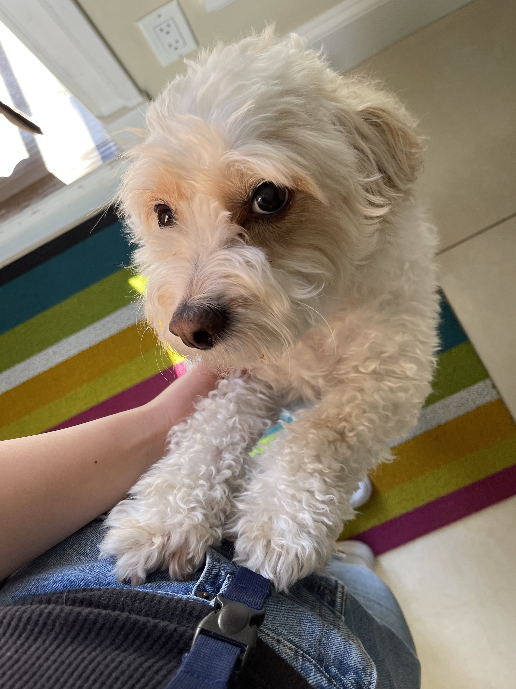

Who am I?
My name is Emily, I'm a 3rd year Engineering Physics student
studying at the University of British Columbia!
Throughout this degree, we learn about the mechanical, software and electrical sides of engineering and
the fundamental physics that govern our world. There are countless applications to be explored with this knowledge, so I use this
website to document some of these projects/experiences as I continue to develop my understanding and familiarity with various topics throughout the field.
Check out the main page to see the portfolio!.
I'm also interested in
the creative design that comes with tackling more open-ended problems
— growing up with many artistic hobbies (an emphasis on visual arts) but a desire to pursue STEM,
getting to develop and practice both creative and technical design processes is
what I strive for.

More about me :)
I've got quite a few hobbies that fill my free time, to varying degrees (whichever impulse strikes first...) The main hobbies are drawing, writing, lifting weights and playing the piano (I also played the flute in highschool, but unfortunately, the rental time was up and my interest went along with it...).Some of my art can be found on the main page, near the bottom; I enjoy both traditional and digital mediums, though charcoal has been a favourite as of late.
I also have a dog named Dudu (photo on the left). He is not named after fecal matter, much to many people's dismay as I must clarify upon saying his name, which is in Chinese. Dudu does not know what engineering is or care very much for it, but he's quite cute regardless!